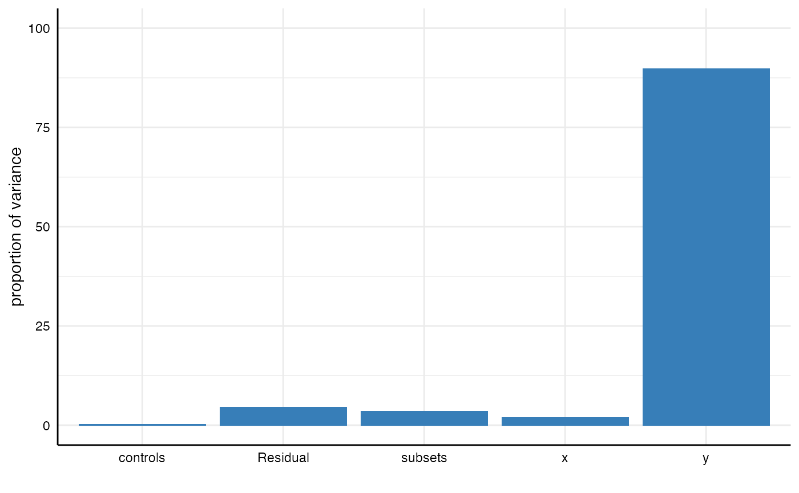
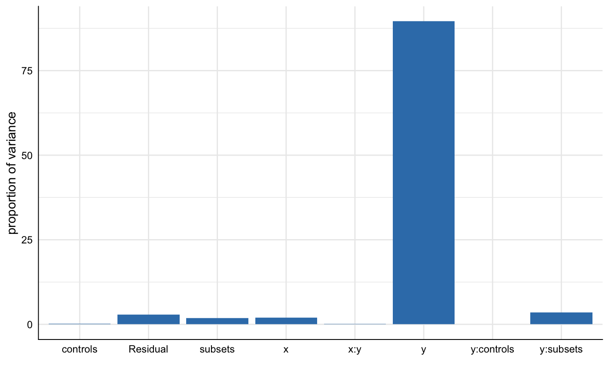

This vignette proposes a novel approach to decompose and identify variance components in any statistical parameter obtained from a specification curve analysis. It can help to understand which analytical choices explain most of the variance in the specification curve (e.g., the variance in the effect sizes).
In order to have some data to work with, we again run the minimal example included in the package.
## Warning: package 'ggplot2' was built under R version 3.6.2## Warning: package 'dplyr' was built under R version 3.6.2We can think of the specification curve analysis as a factorial design in which we investigate the influence of different types of analytical choices on a resulting coefficient or test statistic. One way to investigate these effects is to ask how much variance in the specification curve is explained by which analytical choice (or combination of analytical choices).
In a first step, we estimate a simple multilevel model without predictors (a so-called null model) with specific random effects that represent the analytical choices. We can used the function lmer() from the package lme4 for the estimation.
## Warning: package 'lme4' was built under R version 3.6.2# Estimate model m1 <- lmer(estimate ~ 1 + (1|x) + (1|y) + (1|controls) + (1|subsets), data = results) # Check model summary summary(m1)
## Linear mixed model fit by REML ['lmerMod']
## Formula: estimate ~ 1 + (1 | x) + (1 | y) + (1 | controls) + (1 | subsets)
## Data: results
##
## REML criterion at convergence: 591.7
##
## Scaled residuals:
## Min 1Q Median 3Q Max
## -2.85511 -0.60699 -0.03595 0.55042 2.83210
##
## Random effects:
## Groups Name Variance Std.Dev.
## subsets (Intercept) 0.76166 0.8727
## controls (Intercept) 0.03862 0.1965
## y (Intercept) 19.71524 4.4402
## x (Intercept) 0.42317 0.6505
## Residual 1.00928 1.0046
## Number of obs: 192, groups: subsets, 12; controls, 4; y, 2; x, 2
##
## Fixed effects:
## Estimate Std. Error t value
## (Intercept) 4.079 3.186 1.281We have stored the random effects in the object m1. We already see that most variance is related to the random effect y|intercept. Yet, how much exactly?
Specr offers two ways to decompose the variance of the specification curve. First, we can simply compute the intraclass correlation coefficients using the function icc_specs().
## grp vcov icc percent
## 1 subsets 0.76 0.03 3.47
## 2 controls 0.04 0.00 0.18
## 3 y 19.72 0.90 89.83
## 4 x 0.42 0.02 1.93
## 5 Residual 1.01 0.05 4.60We can see that 89.8% of the variance in the obtained results is related to choosing different dependent variables. Only small parts of the variance are explained by other analytical choices.
Second, we can alternatively use the function plot_variance() to obtain a visualization. The function calls icc_specs() automatically. We can hence pass the multilevel results object directly. Further customization via ggplot2 is possible.
plot_variance(m1) + ylim(0, 100)

You might ask yourself why we did not include the multilevel model estimation in the icc_specs() function. The reason is straight-forward: In many cases, it might be of interest to decompose the variance in different ways (e.g., including interactions between the analytical choices). For example, we could specify the a new multilevel model that includes alternative random effects (e.g., interactions between the analytical choices) and we can again obtain a result table or a plot.
m2 <- lmer(estimate ~ 1 + (1|x) + (1|y) + (1|controls) + (1|subsets) + (1|x:y) + (1|y:controls) + (1|y:subsets), data = results) # Get table icc_specs(m2) %>% mutate_if(is.numeric, round, 2)
## grp vcov icc percent
## 1 y:subsets 0.76 0.03 3.46
## 2 subsets 0.41 0.02 1.86
## 3 y:controls 0.00 0.00 0.00
## 4 x:y 0.02 0.00 0.09
## 5 controls 0.05 0.00 0.21
## 6 y 19.65 0.90 89.64
## 7 x 0.42 0.02 1.91
## 8 Residual 0.62 0.03 2.84# Plot results plot_variance(m2)
We can see that the interaction between analytical choices relating to subsets and dependent variables explains 3.5%.
Finally it should be noted that any other parameter in the data frame can be investigated as well (e.g., not only the estimate such as a regression coefficient, but also the p.value).
m3 <- lmer(p.value ~ 1 + (1|x) + (1|y) + (1|controls) + (1|subsets), data = results)
## boundary (singular) fit: see ?isSingular## grp vcov icc percent
## 1 subsets 0.00 0.04 4.07
## 2 controls 0.00 0.00 0.00
## 3 y 0.02 0.30 29.95
## 4 x 0.00 0.01 0.74
## 5 Residual 0.03 0.65 65.25plot_variance(m3)
